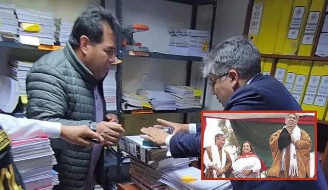

:quality(75)/cloudfront-us-east-1.images.arcpublishing.com/elcomercio/RZSA6CAMNNCLPKKDQIOAUTGYWA.jpg)
Ministerio Público indaga sobre varias joyas que ha exhibido la presidenta y un incremento patrimonial de S/ 432 mil en dos años.
El ahora ministro transitó por diversas entidades públicas antes de convertirse en jefe del gabinete de asesores de la mandataria.

Figuras como Daniela Darcourt, el elenco de “El gran chef: famosos” y el freestyler Jota fueron parte de la ceremonia de entrega de los Premios Luces 2023.
:quality(75)/cloudfront-us-east-1.images.arcpublishing.com/elcomercio/YQFJ56D6DJFRTBGGHI6V6M7AHE.jpg)
Si bien el fabricante coreano es patrocinador oficial de Alianza Lima, también es sponsor de la Conmebol Libertadores. Por ello es que uno de sus vehículos se colocó en el recinto “merengue”. Aquí te contamos de qué vehículo se trata y cuáles son sus características principales
:quality(75)/cloudfront-us-east-1.images.arcpublishing.com/elcomercio/7RIVIXYBOFFNROANGGZAXWYME4.jpg) BOTON PARA EL COMERCIO
BOTON PARA EL COMERCIO
Momento clave. Dina Boluarte declararía que sus ingresos y gastos se justifican con sus ahorros como ministra y presidenta, de julio del 2021 a diciembre del 2023. Además de regalos o préstamos de amigos que la apoyan en su gestión pública. La Fiscalía espera que sus palabras estén respaldadas con documentos bancarios y que muestre los Rolex y joyas Cartier.
De manera exprés, el Pleno mandó al archivo las dos mociones de vacancia presidencial presentadas contra la jefa de Estado por el caso Rolex.
Entérate cómo acceder al Bono de Arrendamiento de Viviendas para Emergencias de S/500, destinado a familias damnificadas por desastres o que habitan en zonas de riesgo debido al fenómeno El Niño.
Gremios de transportistas del norte del país exigen celeridad para destrabar el proyecto de ley 679, que plantea una tariga nivelada a nivel nacional, la cual "sería clave para establecer un precio competitivo que promueva la inversión de las industrias regionales".
Werner Salcedo reconoció que exhibió un Rolex original, el cual le habría proporcionado Wilfredo Oscorima. El gobernador de Cusco entregó a la Fiscalía otros relojes que dijo son imitaciones.
 BOTON PARA LA REPUBLICALas palabras del cantante del Grupo 5 sobre la solicitud persistente de su hijo de cantar junto a él en el escenario conmovieron a la audiencia.